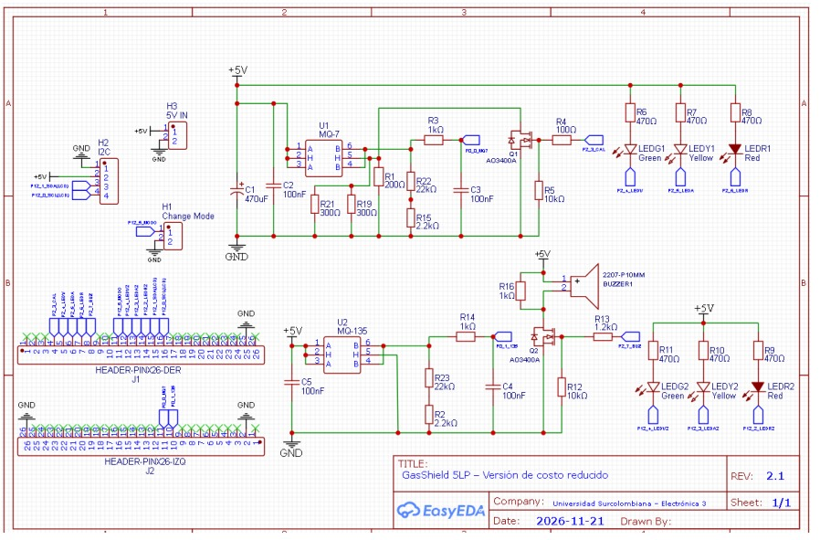
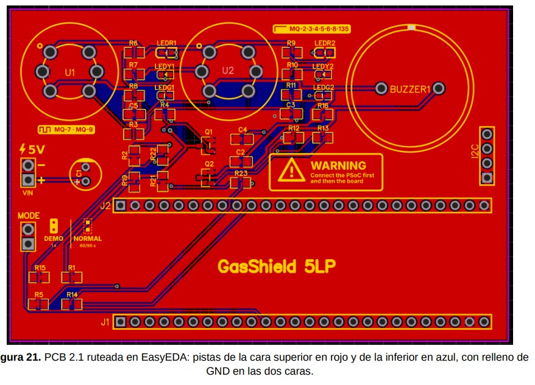
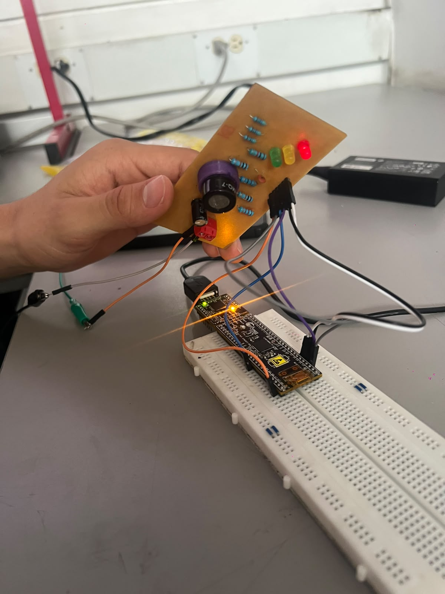
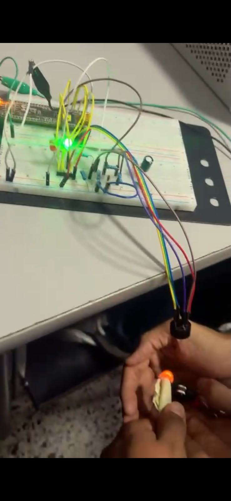
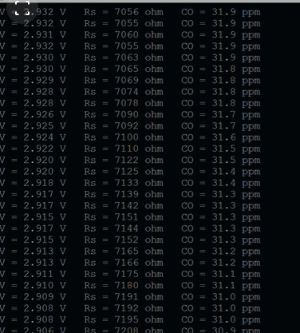
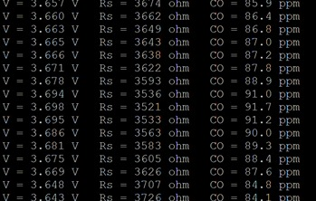

Programación
Desarrollé funciones del firmware de la PSoC 5LP para la lectura de sensores mediante ADC, el control del ciclo de calentamiento del MQ-7 y la transmisión de datos al computador mediante comunicación serial.
PROYECTO ACADÉMICO · 2026
Proyecto de ingeniería electrónica desarrollado en la Universidad Surcolombiana, enfocado en el diseño de una tarjeta de expansión para adquirir y procesar señales de sensores de gas.
01 · CONTEXTO
En el Laboratorio de Aguas de la Universidad Surcolombiana se realizan procesos de calcinación de biomasa mediante hornos que pueden generar gases peligrosos, como el monóxido de carbono.
La ausencia de instrumentos de monitoreo ambiental motivó el planteamiento de una solución electrónica capaz de adquirir señales de sensores de gas y proporcionar información sobre su comportamiento.
Incremento de la señal ante humo durante las pruebas del prototipo.
Diseño 2.1 verificado mediante controles ERC y DRC.
Cotización de cinco PCB, dos ensambladas con componentes SMD. No incluye THT ni envío.
El prototipo fue probado físicamente. Las versiones industriales 2.0 y 2.1 fueron diseñadas y cotizadas, pero no fabricadas.

02 · DESARROLLO
El sistema utiliza la PSoC 5LP como unidad central de adquisición y procesamiento. La tarjeta de expansión integra los sensores y los circuitos necesarios para su alimentación y acondicionamiento de señal.


03 · MI PARTICIPACIÓN
Desarrollé funciones del firmware de la PSoC 5LP para la lectura de sensores mediante ADC, el control del ciclo de calentamiento del MQ-7 y la transmisión de datos al computador mediante comunicación serial.
Participé en las mediciones eléctricas y pruebas funcionales realizadas durante el montaje en protoboard y posteriormente sobre la PCB del prototipo.
Colaboré en la elaboración del esquemático electrónico y en el trazado de pistas de la placa de circuito impreso.
04 · VALIDACIÓN
Se realizaron pruebas de funcionamiento para verificar las condiciones eléctricas del circuito y la respuesta del sensor ante diferentes estímulos.


| Parámetro | Resultado |
|---|---|
| Corriente en fase alta | 140,2 mA |
| Corriente en fase baja | 47,5 mA |
| Voltaje en fase alta | 4,59 V |
| Voltaje en fase baja | 1,39 V |
| Variación de señal ante humo | +90 % |
05 · ADQUISICIÓN DE DATOS
La programación permitió adquirir las señales analógicas de los sensores mediante ADC y transmitir los valores al computador por comunicación serial.
Los valores en ppm corresponden a estimaciones del firmware sin calibración certificada. Los rangos representan los niveles de señalización del prototipo, no límites de seguridad validados.


06 · EVOLUCIÓN
El desarrollo de GasShield 5LP comprendió diferentes etapas, desde la construcción de un prototipo funcional hasta el diseño de una PCB optimizada para fabricación.
Implementación del circuito, programación de la PSoC 5LP y adquisición de señales provenientes del sensor MQ-7.
Mediciones y pruebas funcionales sobre el prototipo para comprobar su respuesta y detectar aspectos susceptibles de mejora.
Rediseño del sistema electrónico y de la PCB, incorporando mejoras de integración y preparación para fabricación industrial.
Reducción de costos mediante selección de componentes y ajustes del diseño. La versión fue verificada y cotizada, pero no fabricada.
07 · OPTIMIZACIÓN
Después de las pruebas del prototipo, el equipo desarrolló dos versiones de PCB orientadas a fabricación industrial. Se verificaron el esquemático, el trazado y los archivos de fabricación.
Cotización sin cupón.
Versión optimizada sin cupón.
Cotizaciones de JLCPCB para cinco PCB, dos de ellas ensambladas con componentes SMD. No incluyen componentes THT ni envío.
08 · APRENDIZAJES
El desarrollo de GasShield 5LP permitió integrar conocimientos de electrónica, programación de microcontroladores e instrumentación en una solución orientada al monitoreo de gases.
Las pruebas experimentales permitieron comprobar el funcionamiento del prototipo, incluyendo la adquisición de señales, el control del calefactor del sensor MQ-7, la transmisión serial de datos y la respuesta del sistema ante estímulos de prueba.
A partir de los resultados obtenidos, se identificaron oportunidades de mejora que orientaron el rediseño electrónico y el desarrollo de versiones preparadas para fabricación industrial.
Mi participación en este proyecto me permitió fortalecer mis habilidades en programación de microcontroladores, configuración de convertidores ADC, comunicación serial y control de sistemas electrónicos.
Asimismo, adquirí mayor experiencia en la elaboración de esquemáticos, el trazado de pistas de PCB y la realización de pruebas experimentales para verificar el funcionamiento de circuitos electrónicos.
Uno de los aprendizajes más importantes fue comprender la relevancia de las mediciones reales durante el desarrollo de un prototipo, ya que permiten identificar diferencias entre el comportamiento esperado y los resultados obtenidos.
Aunque el proyecto académico concluyó, las versiones industriales diseñadas ofrecen una base para desarrollos posteriores, como la ampliación del firmware, la calibración de sensores y la validación en condiciones reales de operación.
El prototipo inicial fue validado mediante pruebas de banco. Las versiones industriales 2.0 y 2.1 quedaron diseñadas, verificadas digitalmente y cotizadas, pero no fueron fabricadas. La calibración para obtener valores confiables en ppm y las pruebas durante una calcinación real permanecieron pendientes.